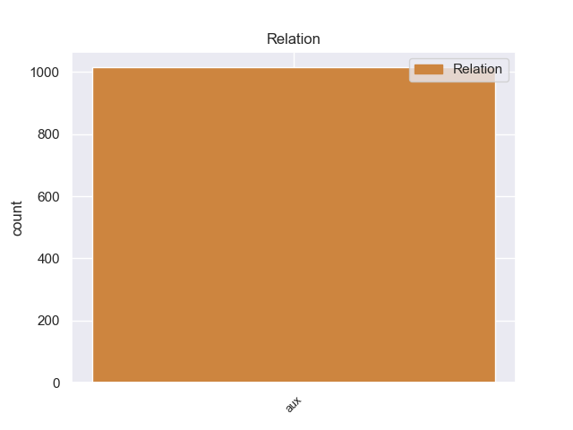
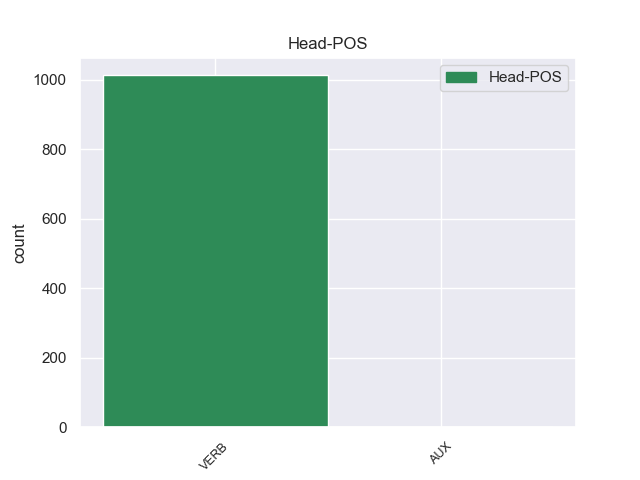
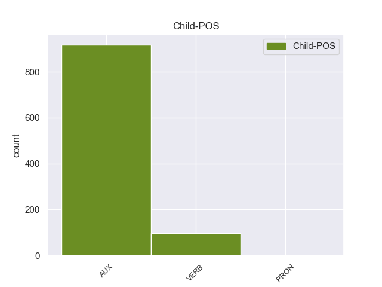

Distribution of features within this leaf



Agreement Rules sorted by frequency.
- When the dependent token is the auxiliary(aux) of the head token, and the dependent token is AUX.
1 De _ _ _ _ 0 _ _ _
2 la _ _ _ _ 0 _ _ _
3 Vega _ _ _ _ 0 _ _ _
4 ha haber AUX _ Mood=Ind|Number=Sing|Person=3|Tense=Pres|VerbForm=Fin 5 aux _ _
5 pedido pedido VERB _ Mood=Ind|Number=Sing|Person=3|Tense=Pres|VerbForm=Fin 0 _ _ _
6 respetar _ _ _ _ 0 _ _ _
7 los _ _ _ _ 0 _ _ _
8 tiempos _ _ _ _ 0 _ _ _
9 de _ _ _ _ 0 _ _ _
10 los _ _ _ _ 0 _ _ _
11 procesos _ _ _ _ 0 _ _ _
12 y _ _ _ _ 0 _ _ _
13 de _ _ _ _ 0 _ _ _
14 la _ _ _ _ 0 _ _ _
15 misma _ _ _ _ 0 _ _ _
16 manera _ _ _ _ 0 _ _ _
17 que _ _ _ _ 0 _ _ _
18 no _ _ _ _ 0 _ _ _
19 ha _ _ _ _ 0 _ _ _
20 querido _ _ _ _ 0 _ _ _
21 entrar _ _ _ _ 0 _ _ _
22 en _ _ _ _ 0 _ _ _
23 la _ _ _ _ 0 _ _ _
24 salida _ _ _ _ 0 _ _ _
25 de _ _ _ _ 0 _ _ _
26 Corbacho _ _ _ _ 0 _ _ _
27 , _ _ _ _ 0 _ _ _
28 tampoco _ _ _ _ 0 _ _ _
29 lo _ _ _ _ 0 _ _ _
30 ha _ _ _ _ 0 _ _ _
31 hecho _ _ _ _ 0 _ _ _
32 la _ _ _ _ 0 _ _ _
33 posible _ _ _ _ 0 _ _ _
34 salida _ _ _ _ 0 _ _ _
35 de _ _ _ _ 0 _ _ _
36 Trinidad _ _ _ _ 0 _ _ _
37 Jiménez _ _ _ _ 0 _ _ _
38 , _ _ _ _ 0 _ _ _
39 que _ _ _ _ 0 _ _ _
40 le _ _ _ _ 0 _ _ _
41 acompañaba _ _ _ _ 0 _ _ _
42 en _ _ _ _ 0 _ _ _
43 la _ _ _ _ 0 _ _ _
44 sala _ _ _ _ 0 _ _ _
45 de _ _ _ _ 0 _ _ _
46 prensa _ _ _ _ 0 _ _ _
47 . _ _ _ _ 0 _ _ _
1 La _ _ _ _ 0 _ _ _
2 Fuerza _ _ _ _ 0 _ _ _
3 Aérea _ _ _ _ 0 _ _ _
4 de _ _ _ _ 0 _ _ _
5 los _ _ _ _ 0 _ _ _
6 Estados _ _ _ _ 0 _ _ _
7 Unidos _ _ _ _ 0 _ _ _
8 tenía teer VERB _ Mood=Ind|Number=Sing|Person=3|Tense=Past|VerbForm=Fin 9 aux _ _
9 planeado planeado VERB _ Mood=Ind|Number=Sing|Person=3|Tense=Past|VerbForm=Fin 0 _ _ _
10 en _ _ _ _ 0 _ _ _
11 un _ _ _ _ 0 _ _ _
12 principio _ _ _ _ 0 _ _ _
13 adquirir _ _ _ _ 0 _ _ _
14 650 _ _ _ _ 0 _ _ _
15 F _ _ _ _ 0 _ _ _
16 - _ _ _ _ 0 _ _ _
17 22 _ _ _ _ 0 _ _ _
18 , _ _ _ _ 0 _ _ _
19 pero _ _ _ _ 0 _ _ _
20 sólo _ _ _ _ 0 _ _ _
21 se _ _ _ _ 0 _ _ _
22 construirán _ _ _ _ 0 _ _ _
23 187 _ _ _ _ 0 _ _ _
24 ejemplares _ _ _ _ 0 _ _ _
25 , _ _ _ _ 0 _ _ _
26 como _ _ _ _ 0 _ _ _
27 resultado _ _ _ _ 0 _ _ _
28 de _ _ _ _ 0 _ _ _
29 su _ _ _ _ 0 _ _ _
30 elevado _ _ _ _ 0 _ _ _
31 coste _ _ _ _ 0 _ _ _
32 de _ _ _ _ 0 _ _ _
33 despegue _ _ _ _ 0 _ _ _
34 unitario _ _ _ _ 0 _ _ _
35 que _ _ _ _ 0 _ _ _
36 ronda _ _ _ _ 0 _ _ _
37 los _ _ _ _ 0 _ _ _
38 150 _ _ _ _ 0 _ _ _
39 millones _ _ _ _ 0 _ _ _
40 de _ _ _ _ 0 _ _ _
41 dólares _ _ _ _ 0 _ _ _
42 . _ _ _ _ 0 _ _ _
Disagree Examples:
1 En _ _ _ _ 0 _ _ _
2 la _ _ _ _ 0 _ _ _
3 historia _ _ _ _ 0 _ _ _
4 reciente _ _ _ _ 0 _ _ _
5 de _ _ _ _ 0 _ _ _
6 el _ _ _ _ 0 _ _ _
7 grupo _ _ _ _ 0 _ _ _
8 y _ _ _ _ 0 _ _ _
9 durante _ _ _ _ 0 _ _ _
10 su _ _ _ _ 0 _ _ _
11 poco _ _ _ _ 0 _ _ _
12 tiempo _ _ _ _ 0 _ _ _
13 de _ _ _ _ 0 _ _ _
14 vida _ _ _ _ 0 _ _ _
15 han haber AUX _ Mood=Ind|Number=Plur|Person=3|Tense=Pres|VerbForm=Fin 16 aux _ _
16 pasado pasar VERB _ Gender=Masc|Number=Sing|Tense=Past|VerbForm=Part 0 _ _ _
17 pocos _ _ _ _ 0 _ _ _
18 músicos _ _ _ _ 0 _ _ _
19 , _ _ _ _ 0 _ _ _
20 todos _ _ _ _ 0 _ _ _
21 sus _ _ _ _ 0 _ _ _
22 componentes _ _ _ _ 0 _ _ _
23 originales _ _ _ _ 0 _ _ _
24 fueron _ _ _ _ 0 _ _ _
25 los _ _ _ _ 0 _ _ _
26 primeros _ _ _ _ 0 _ _ _
27 que _ _ _ _ 0 _ _ _
28 empezaron _ _ _ _ 0 _ _ _
29 justamente _ _ _ _ 0 _ _ _
30 desde _ _ _ _ 0 _ _ _
31 inicio _ _ _ _ 0 _ _ _
32 de _ _ _ _ 0 _ _ _
33 el _ _ _ _ 0 _ _ _
34 grupo _ _ _ _ 0 _ _ _
35 , _ _ _ _ 0 _ _ _
36 a _ _ _ _ 0 _ _ _
37 excepción _ _ _ _ 0 _ _ _
38 de _ _ _ _ 0 _ _ _
39 bajo _ _ _ _ 0 _ _ _
40 . _ _ _ _ 0 _ _ _
1 Un _ _ _ _ 0 _ _ _
2 álbum _ _ _ _ 0 _ _ _
3 con _ _ _ _ 0 _ _ _
4 la _ _ _ _ 0 _ _ _
5 banda _ _ _ _ 0 _ _ _
6 sonora _ _ _ _ 0 _ _ _
7 compuesta _ _ _ _ 0 _ _ _
8 por _ _ _ _ 0 _ _ _
9 Bjørn _ _ _ _ 0 _ _ _
10 Arve _ _ _ _ 0 _ _ _
11 Lagim _ _ _ _ 0 _ _ _
12 y _ _ _ _ 0 _ _ _
13 Tor _ _ _ _ 0 _ _ _
14 Linløkken _ _ _ _ 0 _ _ _
15 fue _ _ _ _ 0 _ _ _
16 lanzada _ _ _ _ 0 _ _ _
17 , _ _ _ _ 0 _ _ _
18 y _ _ _ _ 0 _ _ _
19 puede poder AUX _ Mood=Ind|Number=Sing|Person=3|Tense=Pres|VerbForm=Fin 21 aux _ _
20 ser _ _ _ _ 0 _ _ _
21 descargada descargado VERB _ Gender=Fem|Number=Sing|Tense=Past|VerbForm=Part 0 _ _ _
22 desde _ _ _ _ 0 _ _ _
23 Descarga _ _ _ _ 0 _ _ _
24 Oficial _ _ _ _ 0 _ _ _
25 . _ _ _ _ 0 _ _ _
1 Sin _ _ _ _ 0 _ _ _
2 embargo _ _ _ _ 0 _ _ _
3 de _ _ _ _ 0 _ _ _
4 el _ _ _ _ 0 _ _ _
5 pueblo _ _ _ _ 0 _ _ _
6 no _ _ _ _ 0 _ _ _
7 ha haber AUX _ Mood=Ind|Number=Sing|Person=3|Tense=Pres|VerbForm=Fin 8 aux _ _
8 cambiado cambiar VERB _ Gender=Masc|Number=Sing|Tense=Past|VerbForm=Part 0 _ _ _
9 oficialmente _ _ _ _ 0 _ _ _
10 su _ _ _ _ 0 _ _ _
11 nombre _ _ _ _ 0 _ _ _
12 . _ _ _ _ 0 _ _ _
1 Ha haber AUX _ Mood=Ind|Number=Sing|Person=3|Tense=Pres|VerbForm=Fin 2 aux _ _
2 recuperado recuperar VERB _ Gender=Masc|Number=Sing|Tense=Past|VerbForm=Part 0 _ _ _
3 calidad _ _ _ _ 0 _ _ _
4 porque _ _ _ _ 0 _ _ _
5 se _ _ _ _ 0 _ _ _
6 estaba _ _ _ _ 0 _ _ _
7 subiendo _ _ _ _ 0 _ _ _
8 demasiado _ _ _ _ 0 _ _ _
9 . _ _ _ _ 0 _ _ _
1 Al _ _ _ _ 0 _ _ _
2 activar _ _ _ _ 0 _ _ _
3 la _ _ _ _ 0 _ _ _
4 conexión _ _ _ _ 0 _ _ _
5 NFC _ _ _ _ 0 _ _ _
6 en _ _ _ _ 0 _ _ _
7 su _ _ _ _ 0 _ _ _
8 correspondiente _ _ _ _ 0 _ _ _
9 widget _ _ _ _ 0 _ _ _
10 y _ _ _ _ 0 _ _ _
11 acercar _ _ _ _ 0 _ _ _
12 el _ _ _ _ 0 _ _ _
13 Xperia _ _ _ _ 0 _ _ _
14 S _ _ _ _ 0 _ _ _
15 a _ _ _ _ 0 _ _ _
16 la _ _ _ _ 0 _ _ _
17 etiqueta _ _ _ _ 0 _ _ _
18 podemos _ _ _ _ 0 _ _ _
19 activar _ _ _ _ 0 _ _ _
20 las _ _ _ _ 0 _ _ _
21 funciones _ _ _ _ 0 _ _ _
22 que _ _ _ _ 0 _ _ _
23 hayamos haber AUX _ Mood=Sub|Number=Plur|Person=1|Tense=Pres|VerbForm=Fin 24 aux _ _
24 querido querer VERB _ Gender=Masc|Number=Sing|Tense=Past|VerbForm=Part 0 _ _ _
25 programar _ _ _ _ 0 _ _ _
26 en _ _ _ _ 0 _ _ _
27 el _ _ _ _ 0 _ _ _
28 teléfono _ _ _ _ 0 _ _ _
29 . _ _ _ _ 0 _ _ _